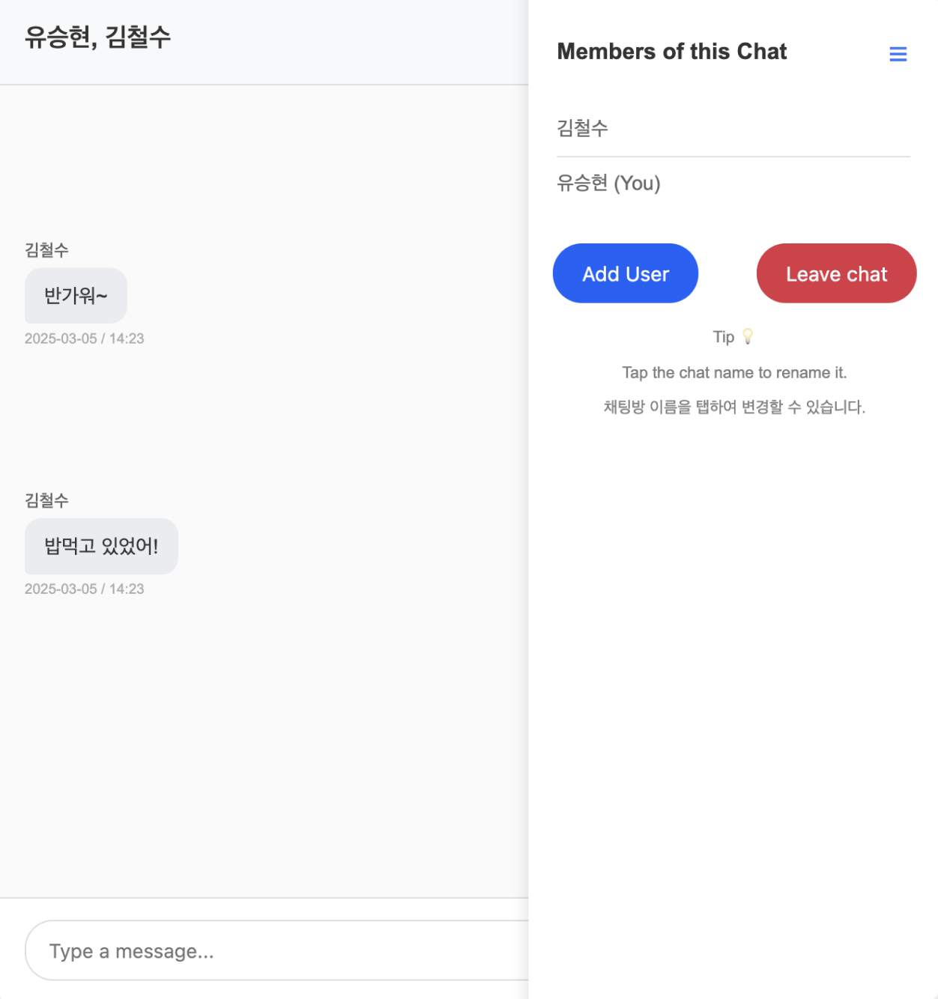
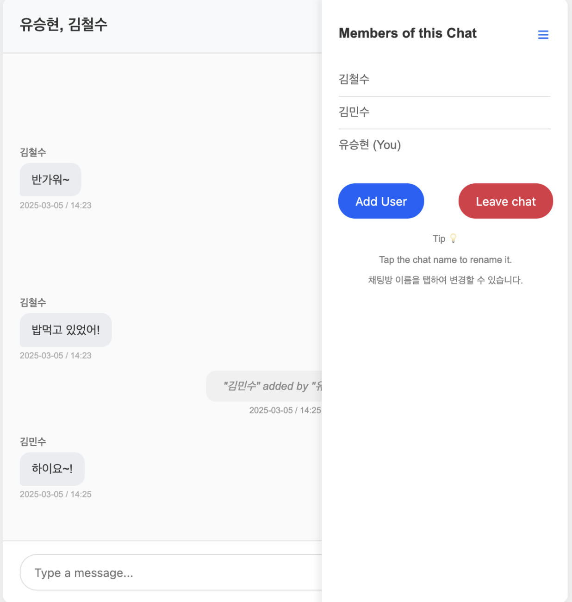

나만의 카카오톡 만들어보기 프로젝트
WebSocket을 공부하면서 카카오톡이나 인스타그램 DM 같은 채팅 서비스를 만들어보면 재미있겠다고 생각했다. 그렇게 해서 시작한 프로젝트였지만, 예상보다 많은 우여곡절이 있었다.
단순히 WebSocket을 활용한 실시간 채팅 자체는 비교적 간단했지만, 이를 실제 서비스처럼 만들려니 고려해야 할 요소가 많았다.
채팅 목록 관리, 메시지 읽음/안 읽음 처리, 채팅방 UI 구현, 보안, 그리고 데이터를 효과적으로 DB에 저장하고 불러오는 방법까지 신경 써야 할 부분이 한두 가지가 아니었다.
그래도 원하는 방향대로 구현이 어느 정도 마무리되어 이렇게 정리해본다. 백엔드 위주로 정리해봤다.
사용한 기술은 아래와 같다
프론트엔드 : HTML, JavaScript, Websocket(Stomp), CSS
백엔드 : Java, Spring boot, Websocket, MySQL, JPA, Redis
백엔드에서는 모든 API를 RESTful하게 설계하여, 프론트엔드에서는 이를 호출해 데이터를 가져와 렌더링하는 방식으로 구현했다.
Redis를 도입한 이유는 성능 최적화 때문이다. 채팅 서비스의 특성상 CRUD 요청이 매우 빈번하게 발생하는데, 메시지를 하나하나 직접 데이터베이스에 저장하면 서버 부하가 커질 수밖에 없다. 특히 서비스 규모가 커졌을 때, 이런 방식은 과부하를 유발할 가능성이 높다. 이를 방지하고자 Redis를 활용해 데이터를 분산 처리하여 효율성을 높이고자 했다.
아래 링크들은 개발하면서 특히 백엔드에서 발생한 문제들과 그 해결 과정을 정리한 글들이다. 최대한 백엔드 리소스와 효율을 고려하고, 서버 과부화를 줄이는 방향으로 구현했다.
Redis를 여러 곳에서 활용했지만, 그중 한 가지 예를 들자면, 메시지를 보낼 때마다 즉시 데이터베이스에 저장하는 대신, 먼저 Redis에 저장한 후, Spring의 스케줄링 기능을 활용해 30분에 한 번씩 누적된 메시지를 한꺼번에 데이터베이스에 동기화하는 방식으로 최적화했다.
이 과정에서 Redis에 저장된 데이터, 데이터베이스에 저장된 데이터, 그리고 사용자 화면에 표시되는 데이터 간의 싱크를 맞추는 것이 중요한 과제였다. 이러한 고려 사항과 해결 과정은 아래 링크에 정리된 글에서 더 자세히 다루고 있다.
나중에 참고하기 위해 작성한, 나만의 카카오톡 만들기 프로젝트에서 발생한 문제와 그 해결 방법에 대한 포스팅 링크
Websocket 보안 방식 변경 방법 2
Redis 기반 채팅 메시지 저장 및 성능 개선
Redis 기반 채팅 리스트 읽음/읽지 않음 알림 시스템
Redis와 WebSocket 기반 채팅 목록 리프레시 및 알림 시스템
Spring WebSocket에서 @AuthenticationPrincipal이 null인 것 해결하기
그리고 아직 해결하지 못 한 마지막 관문.. ㅠ
꼭 해낼거다..
실제 운영 중인 서비스 주소. 실제 서비스를 경험해보고 싶어서 AWS에 업로드해봤다. WebSocket은 HTTPS 환경에서만 동작하기 때문에 SSL 인증도 설정했다. 결과는 대만족!
github에 업로드한 repository 주소
구현 예시:
첫 페이지는 로그인 페이지이다. 로그인및 회원가입이 가능하다.
로그인 후 처음 나오는 화면이다 여기서 채팅목록을 확인할 수 있고 Search User를 통해 유저를 검색해 새로운 채팅방을 만들 수 있다.
 Search User를 클릭했을 때 나오는 화면이다. 여기서 유저를 검색할 수 있고 그리고 Start new chat버튼을 이용해 그 유저와 채팅방을 만들 수 있다
Search User를 클릭했을 때 나오는 화면이다. 여기서 유저를 검색할 수 있고 그리고 Start new chat버튼을 이용해 그 유저와 채팅방을 만들 수 있다
채팅방의 UI이다. UI를 만드는 과정이 정말 어려웠다. 메시지와 시간, 이름 표시뿐만 아니라, 데이터베이스 부하를 줄이기 위해 JPA의 페이지네이션 기술을 활용하여 스크롤 업 시 채팅 히스토리를 불러오도록 했다. 또한, 애니메이션 처리 등 세세한 부분까지 고려해야 할 것이 많았다.
오른쪽 위 메뉴를 누르면 해당 채팅방에 있는 유저 목록을 확인할 수 있다. 또한, 그룹 채팅을 위해 “Add User” 기능을 추가하여 새로운 사용자를 초대할 수 있도록 했다.
“Add user”버튼을 클릭하면 나오는 화면이다. 유저를 검색할 수 있고 추가할 수 있다.
“Add” 버튼을 누르게되면 유저가 해당 채팅방에 추가되고 “Added” 라고 초록색으로 바뀐다.
물론 이미 해당 채팅방에 유저가 있다면 해당 유저는 “In chat” 으로 표시되고 더이상 추가되지 않는다.
채팅방에 유저가 추가되면, 시스템 메시지를 통해 누가 언제 누구를 추가했는지 표시된다. 추가된 유저는 즉시 채팅에 참여할 수 있다.
당연히 오른쪽 메뉴에서도 업데이트된 유저 목록이 확인된다.
또한, 상단의 제목을 클릭하면 채팅방 제목을 변경할 수 있다.
이 또한 마찬가지로 변경 시 시스템 메시지를 통해 누가 몇 시에 어떤 제목으로 변경했는지 기록된다.
채팅방 목록UI 이다. 여기서는 각 채팅방의 제목, 마지막 메시지, 알림 표시(빨간색), 그리고 마지막 메시지의 시간이 표시된다. 이 또한 Restful하게 데이터가 뿌려진다. 새로운 메세지가 도착하면 그 새로운 메세지만 업데이트 된다.
그리고 정말 인스타그램DM 처럼 새메세지가 도착하면 브라우저 탭에 "New Message!" 라는 문구가 1초 출력되고, 앞에 "(1)" 또는 새로운 메세지의 양에 맞게 알림도 표시된다!
총정리
정말 재밌는 작업이였다. 이렇게 나도 이젠 마음만 먹으면 나만의 카카오톡 서비스를 만들수 있게 되었다는게 너무 기뻤다. 요번 프로젝트는 특히 실제 서비스를 한다고 생각하면서 기능도 기능이지만 데이터 리소스 최적화를 최대한 많이 생각하면서 만들어봤다.대부분의 데이터는 Redis를 거쳐 저장되며, 몇 가지 예외를 제외하면 데이터베이스에 직접 저장되는 경우는 거의 없다. 덕분에 정말 코드 짜기가 매우 복잡했지만 계속 설계하고 계획하고 써보고 하면서 결국구현해냈다 그리고 그 과정이 무엇보다 너무 즐거웠다 너무 즐거워서 자기전까지 계속 작업하고 일어나서 바로 시작하고 그랬던 것 같다.
Posted on 2025.03.05